Brand experience direction. We followed your brief in full. We did not start designing screens. This pack is the idea, the structure, the system, and the stills — not the live website.
End of visual direction. Homepage specified and art-directed. Production not started — on purpose.
Strategy + art direction. Stills are mood, shown in full. They are not UI to build pixel-for-pixel.
Yes / change X. Then say build. Open facts we refused to invent are listed at the end.
| Layer | Status |
|---|---|
| Positioning & IA | CREATE / BUILD / GROW · six outcomes · Perspective / Case Stories / Collective · six-word nav |
| Visual law | FUTURE = everyday world · RAW = first hit · ART = silence between chapters |
| System | Type, colour tests, 13 forms, seven motions, grid, mobile, SEO — written |
| Homepage | Chapters 00–11 specified. Stills are mood. Shown in full, not cropped. |
| Production | Not started. Waiting for your yes. Old live site parked. |
India / Shyamal is the confirmed operating fact. Canada stays off Home until you say it is real. Lime in some RAW stills was our test — not your brief.
If every offering sits equally — branding, CGI, SEO, SaaS, AI, cloud, CTO advisory — the visitor thinks “13UTOPiA does everything.” You said that is exactly what we must not let them think.
13UTOPiA is a multidisciplinary company that combines imagination, technology and growth to build what conventional companies cannot.
Unreal — imagination, creativity, ambition, possibility.
Unreasonable — challenge assumptions, ambitious engineering, refuse mediocre outcomes.
Make it work — not an art experiment. Brands, products, systems for real businesses.
Your standard: in 5–10 seconds they know we are not another agency, we can build what we imagine, and we can grow it. WOW and TRUST at once.
Unreal visuals. Unreasonable interactions. Serious business results.
| Reference | Good at | We took | We refused |
|---|---|---|---|
| Munich | Outlined graphics, line systems | Outlines as a language that draws and changes | Their shapes, theme-kit look, any asset |
| RPA Comunicación | Energy, intro, oversized words, scroll as story | Sequencing. Type as an event | Party-site chaos, copying their scroll |
| KOTA | Restraint, editorial type, results | Silence between crazy chapters. Cases as what changed | Their curves, layout, voice |
| Made With GSAP | Motion as the experience | A small set of verbs that mean something | Fade-in + parallax carnival |
Your order: strategy → IA → visual direction → homepage → core pages → SEO → engineering → launch. We stopped before homepage code.
If we had a better idea, we labelled it a suggestion. The brief won until you chose. Fuse (FUTURE / RAW / ART) is the chosen suggestion.
Previous homepage UI lock is parked. We did not dress the old page up and call it this program.
A creative technology and growth company building brands, products and systems for ambitious organizations. (Category name can get more ownable later. We did not invent a cleverer label.)
Brand strategy · Identity · Creative direction · Brand experience · UI/UX · CGI · Motion · Visual content
Websites · Apps · SaaS · AI agents · Automation · Custom software · Cloud · DevOps · APIs · Product engineering
SEO · Performance · Social · Content · Leads · Growth strategy · Digital transformation · CTO advisory
Launch bring something new · Grow attention, customers, revenue · Scale systems that hold growth · Modernize replace what is outdated · Automate remove unnecessary manual work · Transform change how the business operates.
Your six operational pillars stay underneath. They are not six equal ideas on the website. A branding buyer and an AI/SaaS buyer both find themselves in one beat.
Perspective — not About Us. Story, vision, mission, why, process, footprint.
Case Stories — not Portfolio. What we changed, not what we made.
Collective — not Team. Leadership, studio, engineering, growth, culture, careers.
Work · Capabilities · Solutions · Perspective · Collective · Connect
Persistent: Start something unreasonable
Practical: Schedule a discovery call
Hero: Enter Utopia · Start a project
Final: Let’s make it real
Not Contact us. Two journeys live in chapters, not as extra nav: “I need to” Create/Build/Grow · “I want to” Launch/Scale/Automate…
Manifesto + proof + invitation. Not the sitemap. If a block doesn’t do one of those three, it doesn’t belong on Home.
WOW → PROOF → WOW → PROOF → invitation. Chapters: Impossible → Idea → Build → Growth → Proof → Collective → Next.
Skipped on Home until Canada is a real operating model. No decorative two flags. Today: India, Iconic Shyamal, Ahmedabad.
Brief → Friction → Unreasonable idea → Build → Result. Creative and engineering can coexist.
Question → Imagine → Define → Create → Build → Grow.
Bold · Intelligent · Playful · Experimental · Precise · Ambitious. Test: playful + precise. Only playful = showreel. Only precise = corporate. Pretty and empty = ART as the whole site. Reject all three.
Outlines that draw · organic interrupt · type as object · motion that transforms · controlled break of the grid · hidden system (12 columns + 13 forms). Chaos is mathematical.
Morph · Draw · Distort · Reveal · Transform · Break · Reassemble. Nothing moves without a reason. GSAP + SVG + CSS. 3D only if required.
Syne = display (grid in FUTURE, fractured in RAW). Instrument Sans = body, never warped. Instrument Serif = ART only. 3D mark is custom lettering — don’t fake it in a webfont.
Instinct: mostly monochrome + one signature. Kit: void / cream / amber as light.
| Mode | Field | Accent |
|---|---|---|
| FUTURE | Near-black + 12-col grid | Amber as light — not paint |
| RAW | Pure black | Electric outline, seconds only. Lime was our test, not your brief. Easy to drop. |
| ART | Cream paper | None. Crop is the accent. |
Orbit · Loop · Grid · Wave · Void · Node · Fold · Core · Flow · Frame · Signal · Fragment · Utopia. Recurring so the site is recognisable without a logo on every section. 13 mythology: selective — load, rare 13/07. Not a gimmick.
Mobile = different choreography, not a shrink. HTML is the site; motion is a layer. No thin keyword farms. No rank guarantees.
You asked for three routes, then choose one or combine two. No single route hits 40% technology · 30% studio · 20% editorial · 10% controlled chaos. So we combine jobs, not looks.
Dark, distorted type, outlines, aggressive motion. 3s: what the hell. 30s risk: art school — unless it snaps to order. Whole site: memorable, hard to sell. Job: first 3–8 seconds, morphs, Normal vs Unreasonable.
Grid, precision, futuristic form, amber as light. 3s: serious. 30s: highest trust — can ship SaaS. Whole site: safest, may lack chaos. Job: default world, proof, conversion.
Editorial, organic curve, cinematic quiet. 3s: taste. 30s: trust via craft; weak BUILD. Whole site: beautiful studio. Job: silence between chapters, Perspective, humanity.
Locked combination: FUTURE = the world they live in · RAW = the first hit · ART = the rest. Do not average into one muddy look.
First hit. Type too large for the frame. Outline mid-morph (circle → cube). Curiosity weapon.
Use for load, hero 3–8s, CREATE/BUILD/GROW morphs. Never for proof, forms, or metrics.
Lime here is a test outline — not brand law. If you dislike it, RAW can flash white or amber instead.
Full still. Nothing cropped.
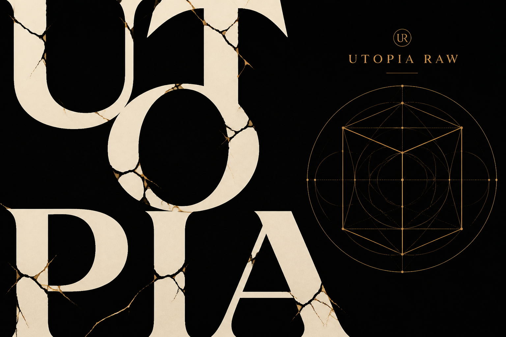
The everyday world. 12-column grid. Matte 13 with weight. Amber as light from the existing mark. Unreasonable set like a specification.
This is how a CEO believes we can ship SaaS and still feel premium. Default field for capabilities, solutions, connect.
Full still. Nothing cropped.
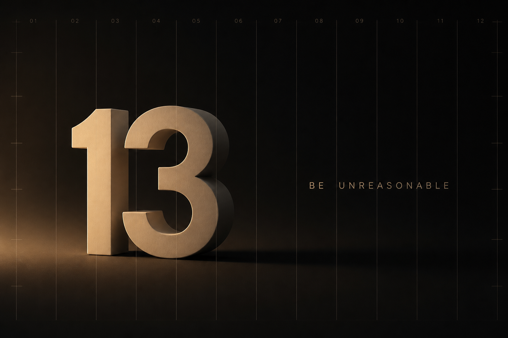
Silence. Paper. Crop. One ink curve. No second colour.
This is why RAW and the worlds hit harder. Perspective, process lines, Collective humanity live here.
If this were the whole site it would read as a studio that cannot build. It is not the whole site.
Full still. Nothing cropped.
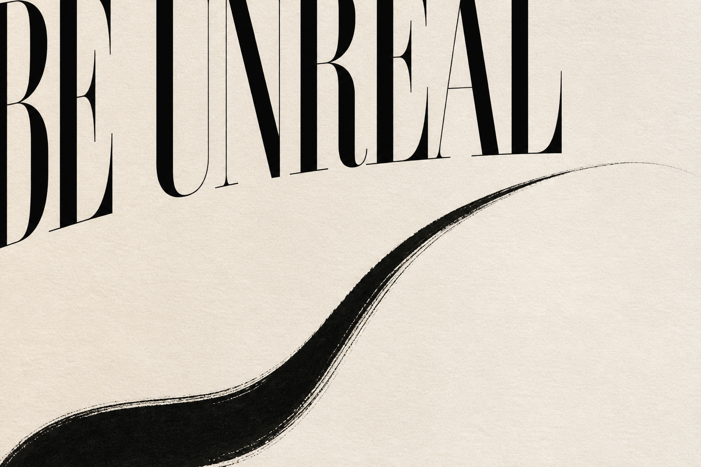
Not a percentage bar. Number is the story. Fragment → Core. RAW into FUTURE. Short. Honour reduced-motion (static 13).
This is also where the 13 mythology starts — selective, not a scoreboard on every chapter.
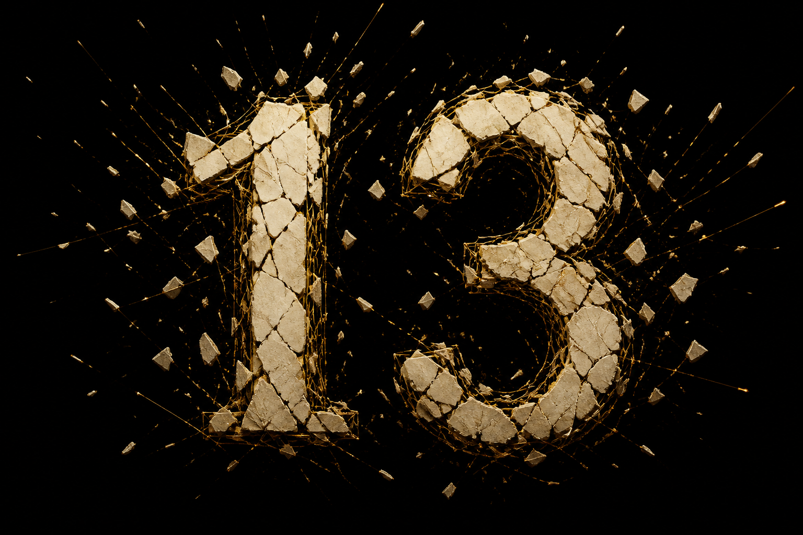
3–8 seconds. Screen almost empty. Outline draws (circle → cube → unfolds). Type stretches, fragments, almost too large.
Micro: 13UTOPiA. Display: BE UNREAL. BE UNREASONABLE. We do not open with “13UTOPiA is a creative technology company…”
Motion: Draw → Morph → Fold → Distort. Then it must snap — or it stays art school.
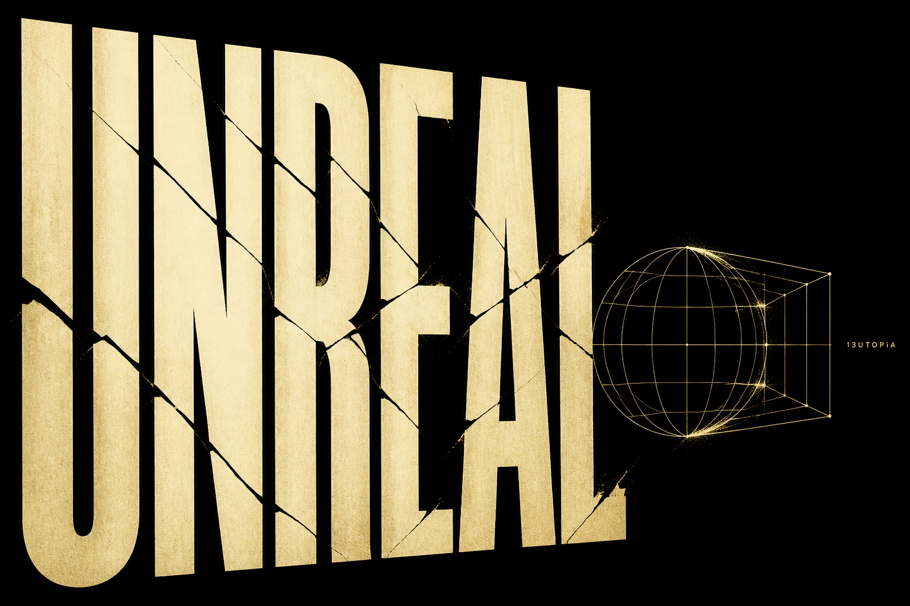
Same words, now on the grid. Matte 13. Amber as light. CREATE · BUILD · GROW as a legend.
Supporting line (example only, not final): We imagine beyond the obvious. We build beyond the expected.
CTAs after the snap: Enter Utopia · Start a project. The motion between the last two frames is the hero. No third layout.
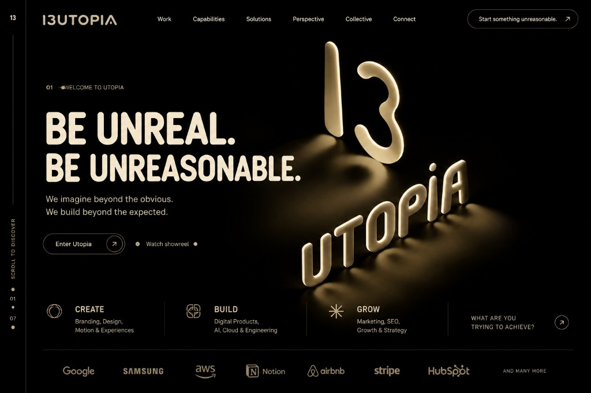
ART. Reveal only. No fidget.
The world doesn’t need another agency.
It needs people who see what others don’t.
That’s why we exist.
Whitespace between lines. This is manifesto. It makes the hero and the worlds hit harder.
Optional “They said don’t / too big / too risky” sequence exists in the brief. Don’t stack it on top of a long RAW hero. One primary hit.
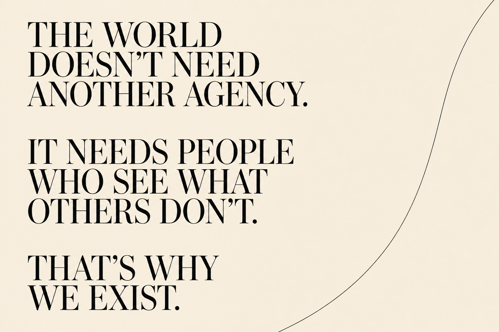
One morph, three states. Not six cards. RAW outline inside a FUTURE field.
Brand · Identity · UX · Motion · CGI
Under all three worlds: Different disciplines. One unreasonable ambition.
This is “I need to Create.” Semantic links in HTML even if the visual is a morph.
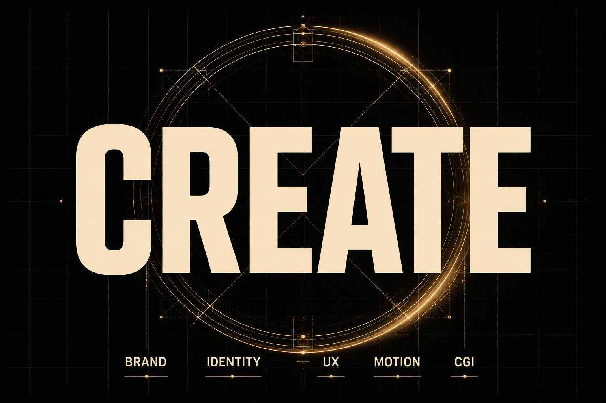
The form becomes a system. Cube → nodes. Engineering, not decoration.
Web · Apps · SaaS · AI · Cloud · Engineering
This is how the technology buyer stays. Same field as CREATE. Only the form changed.
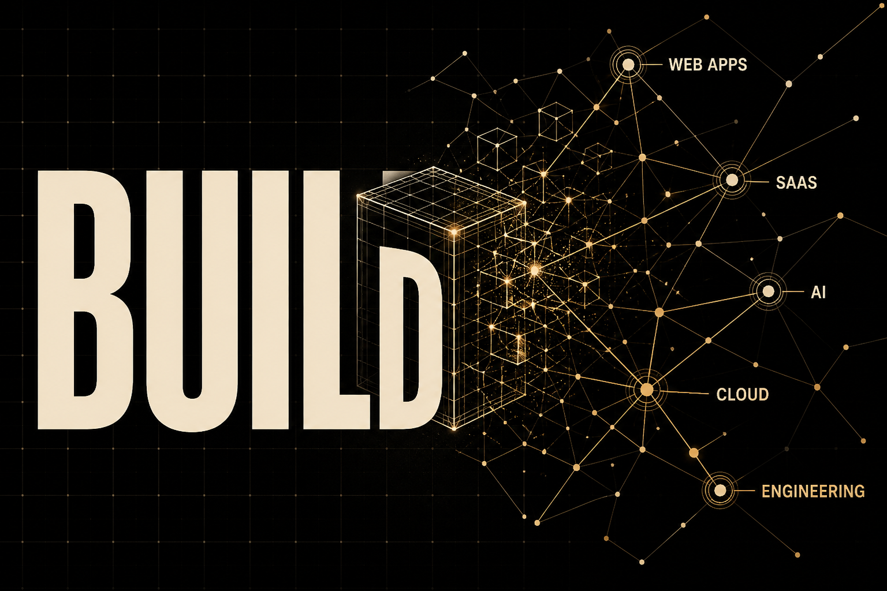
The form expands. Orbits / flow. Same field again.
SEO · Performance · Content · Leads · Strategy
GROW the world stays typographically distinct from Grow the outcome (Launch / Grow / Scale…).
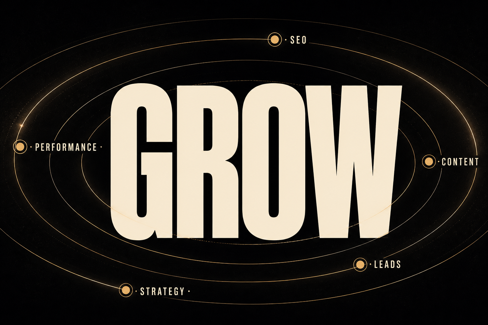
Detailed capabilities under the three worlds. Visitor drills in. They do not land in 30 tiles.
Operational six stay underneath CREATE / BUILD / GROW.
If a generate drew a header or “Explore” chrome, ignore it. The law is three columns, one system, no service cards.
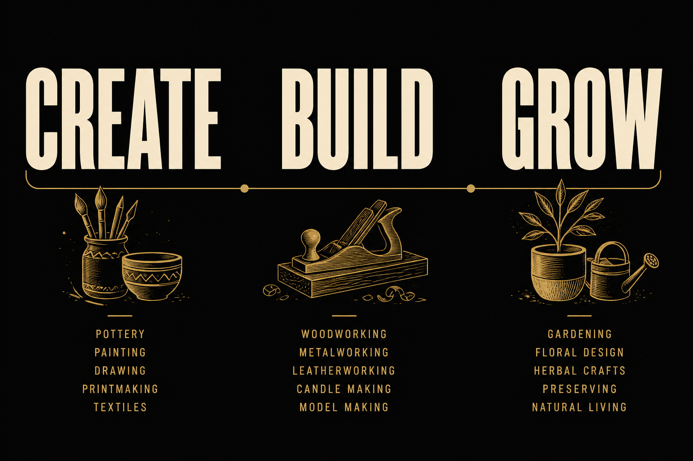
Your idea. Makes the tagline real. Use once on Home — between crafts and outcomes.
Build a website → build a digital ecosystem that changes how the company sells.
Run marketing → build a growth engine.
Use AI → rebuild the workflow around AI.
Create a brand → create a category.
Unreasonable side may break the grid, then reassemble. That’s the point.
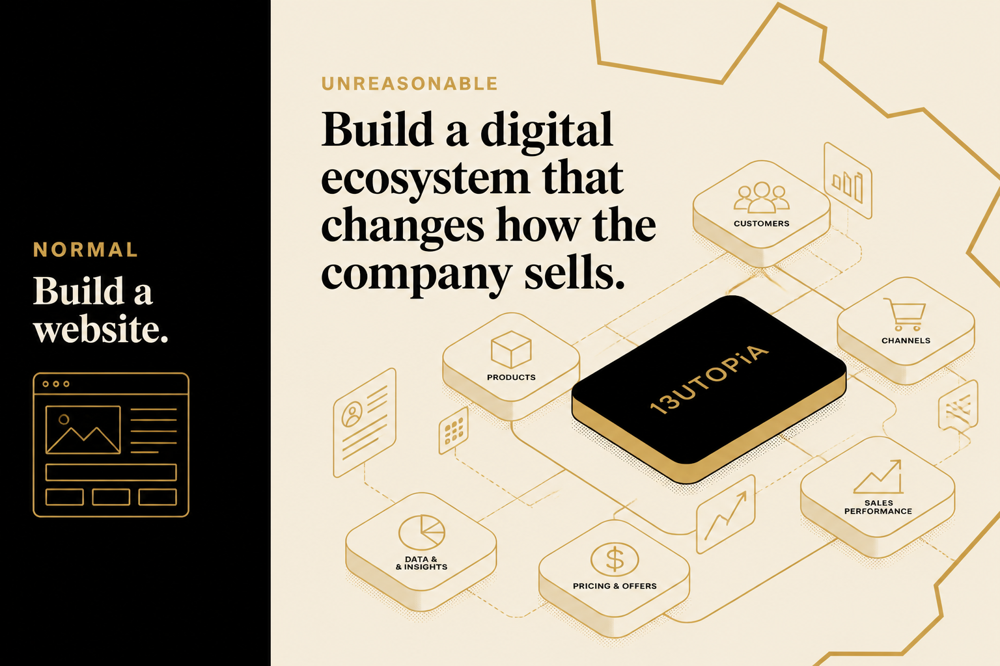
What are you trying to do? Six words at depth: Launch · Grow · Scale · Modernize · Automate · Transform.
Selecting Automate → nodes. Grow → expand. Modernize → old grid breaks and rebuilds. Animation communicates the concept.
This is “I want to…” Mobile: vertical six, tap changes the form. No forced horizontal pin.
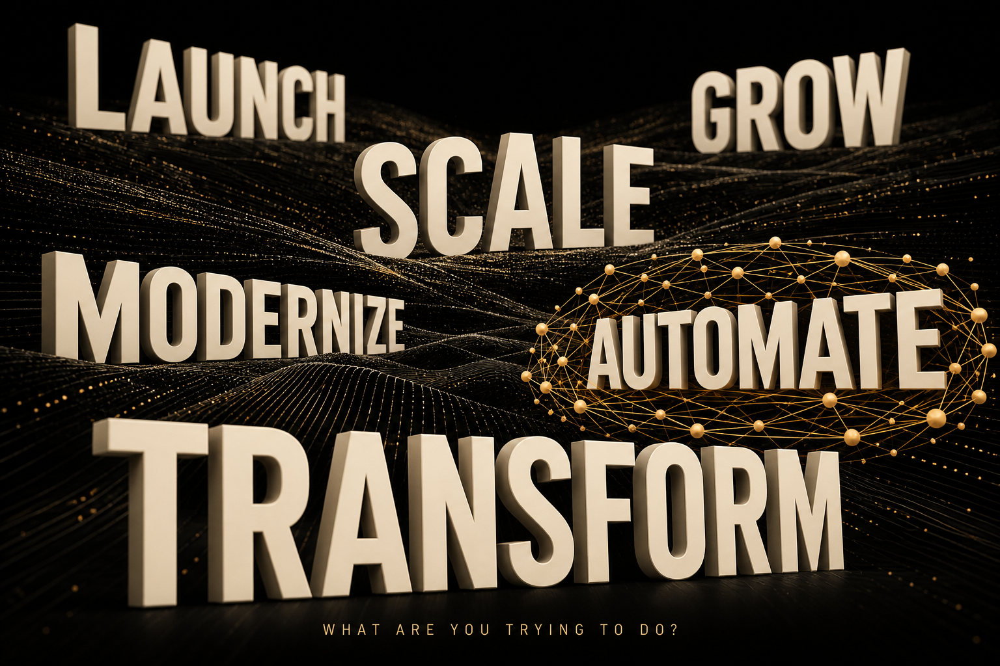
Not a portfolio grid. Cinematic. Two or three on Home. Rest → Work.
The Brief → The Friction → The Unreasonable Idea → The Build → The Result.
Each case gets its own visual language (identity explode / UI construct / nodes / graphs) using only the seven motions.
Placeholders until locked media. We will not invent results or client logos.
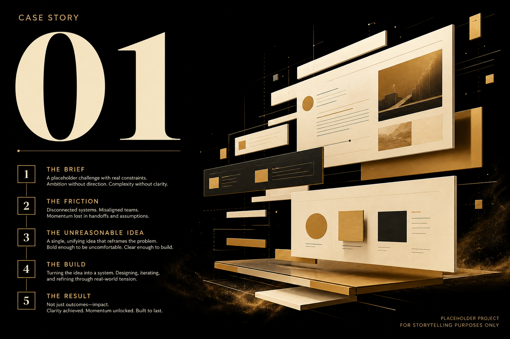
ART. Editorial. Slow. Story · Vision · Mission.
Why 13UTOPiA only when the line is true. Directions to investigate (not copy we invented): one collective / no handoff / strategy through execution / small enough to care, capable enough to build.
We did not write passionate / innovative / customer-focused.
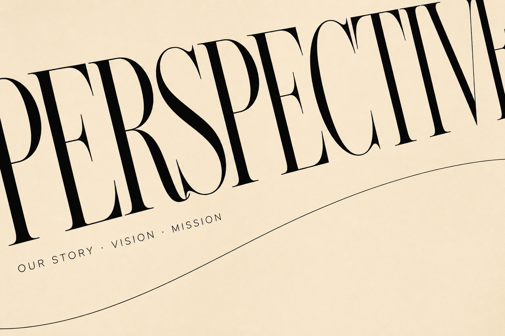
Not Discovery → Design → Development → Launch.
Question challenge the obvious
Imagine the unreasonable possibility
Define turn it into strategy
Create the experience
Build the system
Grow launch, measure, optimize
Connects strategy → creative → engineering → growth.
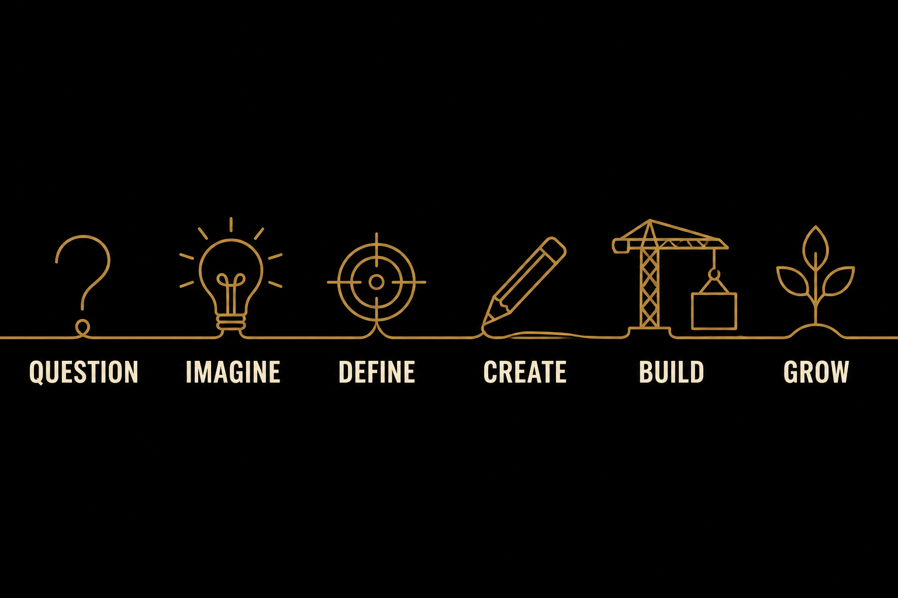
A collective of strategists, designers, engineers, creators and growth thinkers.
Leadership · Creative studio · Engineering · Growth · Culture · Careers
On-brand image: real human + impossible environment. No stock handshakes. No six photo circles. Real names when you give them.
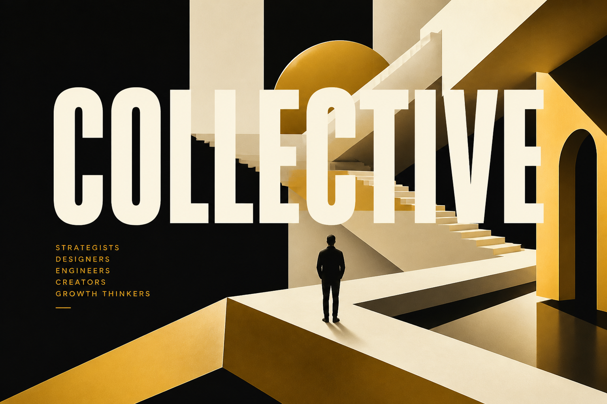
Quiet, then the visual system collapses into the 13 mark.
Let’s make it real. Tell us · Start a project · Schedule discovery.
If a still drew rounded pills, ignore them. That chrome is not the system. CTAs are type + /connect — not Contact us.
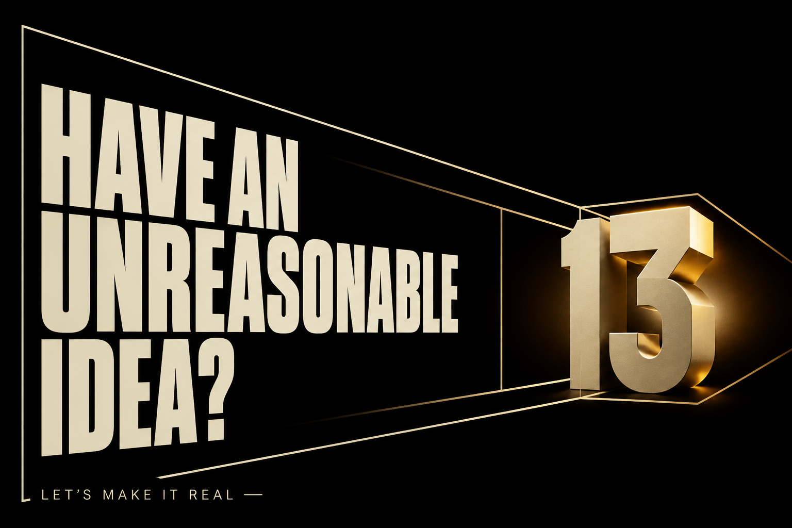
Thinking is on-brief. Pictures are ~70% — compass, not finished UI. Some generates drifted into posters or chrome. We show them in full so you can judge. Build from the system + the snap + the silence, not from every pixel.
Be unreal. Be unreasonable. But always be useful.